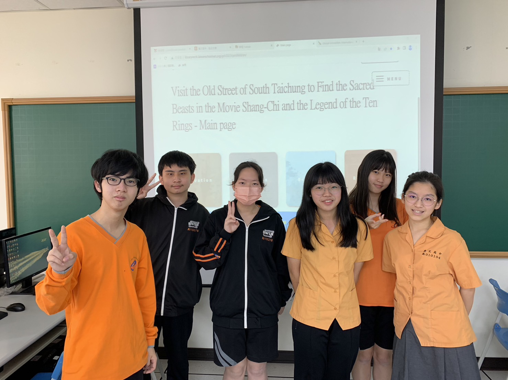

Narrative

Project Website: Click Here
Category: 4. Local Specialties
School: Taichung Municipal Hui-Wen High School
Accomplish Date: 2023.03.15
Location: Nan-tun District, Taichung City
Instructor: CHIH-JEN HUANG, CHI-HUA TSAI
Number of students: 6 students
Student's age: 16-17 years old
E-Mail Address: juren@mail3.hwsh.tc.edu.tw
Category: 4. Local Specialties
School: Taichung Municipal Hui-Wen High School
Accomplish Date: 2023.03.15
Location: Nan-tun District, Taichung City
Instructor: CHIH-JEN HUANG, CHI-HUA TSAI
Number of students: 6 students
Student's age: 16-17 years old
E-Mail Address: juren@mail3.hwsh.tc.edu.tw